BFCL V4 • Agentic
Part 3: Evaluating Format Sensitivity for Tool Calls
Release date: 2025-07-17. Last updated: 2025-07-20. [Change
Log]
With function-calling being the building blocks of Agents, the Berkeley Function-Calling Leaderboard
(BFCL) V4 presents a holistic agentic evaluation for LLMs. BFCL V4 includes web search (part-1)
memory (part-2), and format sensitivity (detailed in this blog). Together, the ability to web search, read
and write from memory, and the ability to invoke functions in different languages present the building
blocks for the exciting and extremely challenging avenues that power agentic LLMs today from deep-research,
to agents for coding and law.
If you're new to function calling, be sure to check out our earlier blog
posts for more background. In BFCL V1, we
introduced expert-curated single-turn, simple, parallel, and multiple function calling. BFCL V2 introduced community -
hobbyists and enterprise - contributed functions. BFCL V3 introduced multi-turn
and multi-step function calling that let models interact with the user, including ability to go
back-and-forth asking clarifying questions and refining the approach. Throughout, BFCL relies on AST
(Abstract Syntax Tree) based, or state-transition based verification ensuring determinism and minimal
fluctuations as you evaluate your models and applications.
Quick Links:
In our past releases, we are encouraged by the community's deep appreciation of the insights across
different models. So, this time we have divided our BFCL V4 release blogs into three parts to address the
technical complexities, and more importantly share many more interesting insights.
1. Introduction
Function calling, or tool use, has emerged as a prominent area of research with widespread practical
applications. Furthermore, agentic tasks that require function calls in real-world scenarios often come with
many variations in format - whether the model is expected to make function calls in Python or JSON,
available functions are described in Python or XML, or other variations. As format conversions can be hard
to implement and intractable for large-scale agentic applications, assessing the format sensitivity of LLMs'
function calling capabilities becomes an essential task for evaluation. However, current benchmarks on
function calling use a single prompt format for all models and queries, that is, with the same language,
same requirements for syntax, same format of provided functions, etc. To address this gap, the BFCL V4
Agentic Format Sensitivity provides a systematic evaluation framework for assessing the format sensitivity
of the function calling capabilities of large language models.
The core premise of BFCL V4 Agentic Format Sensitivity is: for any given query, a model should produce
the correct output regardless of variations in input format.
To systematically explore model behaviors and assess their format sensitivity under this premise, we create
variations of prompts based on the following five key dimensions (detailed in the following section):
- Return format: syntax requirements which the model should follow when giving function
calls, (e.g., Python, JSON).
- Function documentation format: the syntax used to describe available functions (e.g.,
Python, XML).
- Tool calling tag: whether the model should use an additional, XML-style tag to enclose
the outputted function calls.
- Prompt format: presentation of prompts in plain text vs. Markdown.
- Prompt style: variations in tone and instructional phrasing
In this blog, we explain the construction of prompt variations and the selection of test entries. We then
present comprehensive results on 39 evaluated models. Additionally, we discuss common trends of performance,
common failure modes across models, and specific failure modes by model.
2. Prompt variation construction
To construct the prompt variations, we build upon the original Berkeley Function Calling Leaderboard (BFCL
V1) default system prompt by parameterizing key components as listed below:
| Component Name |
Possible Values |
Descriptions |
return_format |
"python", "json", "verbose_xml", "concise_xml"
|
Specifies the syntax the model
should use to format the function call outputs. |
function_doc_format
|
"python", "xml", "json"
|
Controls how function
documentation is presented to the model. |
has_tool_call_tag
|
True, False
|
Whether to wrap function outputs
in <TOOLCALL>...</TOOLCALL> tags. |
prompt_format |
"plaintext", "markdown"
|
Determines the overall format of
the system prompt (plain text or structured with headers). |
prompt_style |
"classic", "experimental"
|
Defines the tone and instruction
style. |
These elements were dynamically assembled, allowing us to precisely control variations across all
combinations of the parameters. For our experiments, we consider all possible combinations of
return_format,
has_tool_call_tag, and
function_doc_format.
Additionally, we vary the original system prompt by independently setting
prompt_format="markdown" and
prompt_style="experimental", resulting in a total of 26
distinct variations. We show the detailed prompt variations below:
Variations of return_format
To assess model behavior when prompted to give function calls in different formats, we vary
return_format to include Python syntax (same as the original BFCL prompt), JSON syntax, and two
kinds of XML-style syntax (verbose_xml and concise_xml), with details shown below.
Prompt example
•Python:
"[func_name1(params_name1=params_value1, params_name2=params_value2...), func_name2(params)]"
• JSON:
"```json
[{\"function\":\"func_name1\",\"parameters\":{\"param1\":\"value1\",\"param2\":\"value2\"...}},{\"function\":\"func_name2\",\"parameters\":{\"param\":\"value\"}}]
• verbose_xml:
"<functions><function name=\"func_name1\"><params><param name=\"param1\"
value=\"value1\" type=\"type1\"/><param name=\"param2\" value=\"value2\"
type=\"type2\"/>...</params></function><function name=\"func_name2\"><param
name=\"param3\" value=\"value3\" type=\"type3\"/></function></functions>"
• concise_xml:
"<functions><function name=\"func_name1\"><param name=\"param1\"
type=\"type1\">value1</param><param name=\"param2\"
type=\"type2\">value2</param>...</function><function name=\"func_name2\"><param
name=\"param3\" type=\"type3\">value</param></function></functions>"
Variations of function_doc_format
In agentic tasks, it may occur that the provided functions are not always in a single format, yet the model
is expected to recognize and use the provided functions regardless of the format in which they are presented.
To address this, we vary function_doc_format by adding Python format and XML format, in addition
to the original JSON format in BFCL.
Prompt example
•JSON:
[{'name': 'math.factorial', 'description': 'Calculate the factorial of a given number. Note that the
provided function is in Python 3 syntax.', 'parameters': {'type': 'dict', 'properties': {'number':
{'type': 'integer', 'description': 'The number for which factorial needs to be calculated.'}}, 'required':
['number']}}]
• Python:
# Function: math.factorial
"""
Calculate the factorial of a given number.
Args:
number (int): The number for which factorial needs to be calculated.
"""
• XML:
<function name="math.factorial">
<desc>Calculate the factorial of a given number.</desc>
<params>
<param name="number" type="integer" required="true">
<desc>The number for which factorial needs to be calculated.</desc>
</param>
</params>
</function>
Variations of has_tool_call_tag
It is common for modern LLMs to mark function calls with special tokens such as
<tool_call></tool_call> or <|assistant|>func_name, we also
consider this aspect when
assessing the format sensitivity of models. Specifically, for has_tool_call_tag=True, we ask the
model to enclose all function calls in <TOOLCALL></TOOLCALL>; tags.
Prompt example
• has_tool_call_tag=True:
"You should only return the function calls in your response.
If you decide to invoke any of the function(s), you MUST put it in the format of {output_format}.
{param_types} You SHOULD NOT include any
other text in the response."
• has_tool_call_tag=False:
"You should only return the function calls in the <TOOLCALL> section. If you decide to invoke any of
the function(s), you MUST put it in the format of <TOOLCALL>{output_format}</TOOLCALL>.
{param_types} You SHOULD NOT include any other text in the response."
Variations of prompt_format
Here we show two kinds of prompt formats, namely plaintext and markdown, that are used to further assess the
sensitivity to prompt format.
Prompt format examples
• plaintext:
{persona}{task}
{tool_call}
{multiturn}
{available_tools}"
•markdown:
{persona}
## Task
{task}
## Tool Call Format
{tool_call}
## Multi-turn Behavior
{multiturn}
## Available Tools
{available_tools}"
Variations of prompt_style
Finally, we assess models' sensitivity to prompt wording by rephrasing the original prompt in BFCL. As
presented below, classic represents the original BFCL prompt, while experimental is
the rephrased version.
Prompt style examples
• classic:
{
"persona": "You are an expert in composing functions.",
"task": "You are given a question and a set of possible functions. Based on the question, you will need to make one or more function/tool calls to achieve the purpose. If none of the functions can be used, point it out. If the given question lacks the parameters required by the function, also point it out.",
"tool_call_no_tag": "You should only return the function calls in your response.\n\nIf you decide to invoke any of the function(s), you MUST put it in the format of {output_format}. {param_types} You SHOULD NOT include any other text in the response.",
"tool_call_with_tag": "You should only return the function calls in the <TOOLCALL> section. If you decide to invoke any of the function(s), you MUST put it in the format of <TOOLCALL>{output_format}</TOOLCALL>. {param_types} You SHOULD NOT include any other text in the response.",
"multiturn": "At each turn, you should try your best to complete the tasks requested by the user within the current turn. Continue to output functions to call until you have fulfilled the user's request to the best of your ability. Once you have no more functions to call, the system will consider the current turn complete and proceed to the next turn or task.",
"available_tools_no_tag": "Here is a list of functions in {format} format that you can invoke.\n{functions}\n",
"available_tools_with_tag": "Here is a list of functions in {format} format that you can invoke.{functions}"
}
• experimental:
{
"persona": "You are an expert in generating structured function calls.",
"task": "You are given a user query and a set of available functions. Your task is to produce one or more function/tool calls to fulfill the user's request. If no suitable function exists, or required parameters are missing, clearly indicate this.",
"tool_call_no_tag": "Return only the function calls in your response.\nUse the following format: {output_format}. {param_types} Do not include any other text.",
"tool_call_with_tag": "Return only the function calls enclosed in <TOOLCALL> tags.\nUse the following format: <TOOLCALL>{output_format}</TOOLCALL>. {param_types} Do not include any other text.",
"multiturn": "In each turn, do your best to fully address the user's request. Continue generating function calls until all tasks are complete. Once no more calls are needed, the system will proceed to the next turn.",
"available_tools_no_tag": "Below is a list of functions in {format} format that you can use:\n{functions}\n",
"available_tools_with_tag": "```{format}\n{functions}\n```"
}
3. Test entry selection
To assess model behaviors across prompt variations, we select a total of 200 single-turn test entries from
the simple, multiple, parallel, and multiple parallel components of both expert-curated and live (i.e.,
community contributed) datasets of BFCL V2, which adds up to 2351 entries. Test entries from the multi-turn,
java, javascript, and hallucination measurement categories are not considered for this study, as model
behaviors under prompt and format variations should already be demonstrable on more basic single-turn test
settings.
To demonstrate the validity of our test entry selection, we further test 20 models both on all the 2351
entries and on the selected entries across all constructed prompt variations. (We could not test all models
on all entries due to budget constraints. All our code is open-sourced!). As shown in Figure 1, model
performance on all test entries and on selected entries show strong linear relationship, which implies that
the selected 200 entries are sufficient for evaluating the format sensitivity of models' function calling
capabilities.
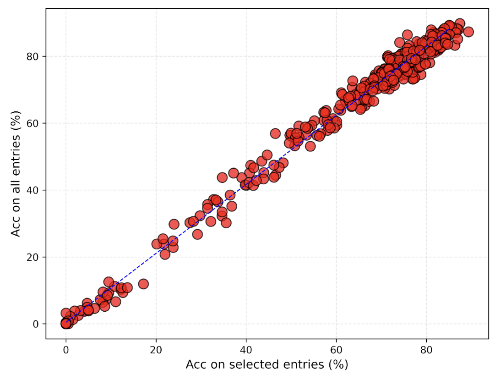
Figure 1. Comparison of model accuracy on 200 selected entries versus all entries. Each dot represents a
specific model and a specific prompt variation. Results indicate a strong correlation between performance on
the sampled subset and the full dataset.
Additionally, we give the breakdown of the selected 200 entries in the following table:
| Test category |
Number of selected entries |
| simple |
30 |
| parallel |
15 |
| multiple |
15 |
| parallel_multiple |
15 |
| live_simple |
24 |
| live_parallel |
86 |
| live_multiple |
6 |
| live_parallel_multiple |
9 |
4. Insights
We present the complete heatmap of tested models in Figure 2. We also discuss in this section some general
trends across models regarding the prompt variations.
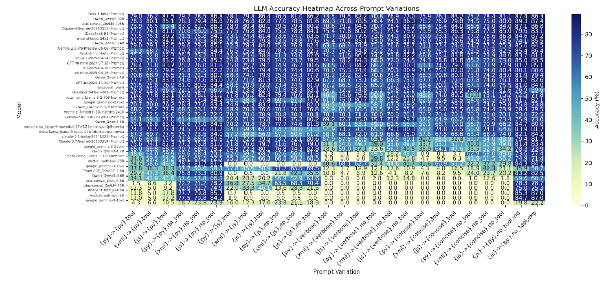
Figure 2. Heatmap for all tested models across all prompt variation configurations. The notations of prompt
variations are in the format of {function_doc_format}->{return_format},{has_tool_call_tag}. For the
variations with prompt_format="markdown" or prompt_style="experimental", we
append in the end "md" or "exp".
4.1 Changing function call return format
Averaged across all test categories and prompt variation settings for each return format, we observe a
general trend—particularly for smaller models—where performance is higher when the model is prompted to
return function calls in Python or JSON format, compared to either of the XML formats. Notably, for the
Claude family models and some function-calling models like watt-tool and CoALM, even large LLMs
(watt-tool-70B, claude-3.7-sonnet) show significant performance drops when return format is in XML format.
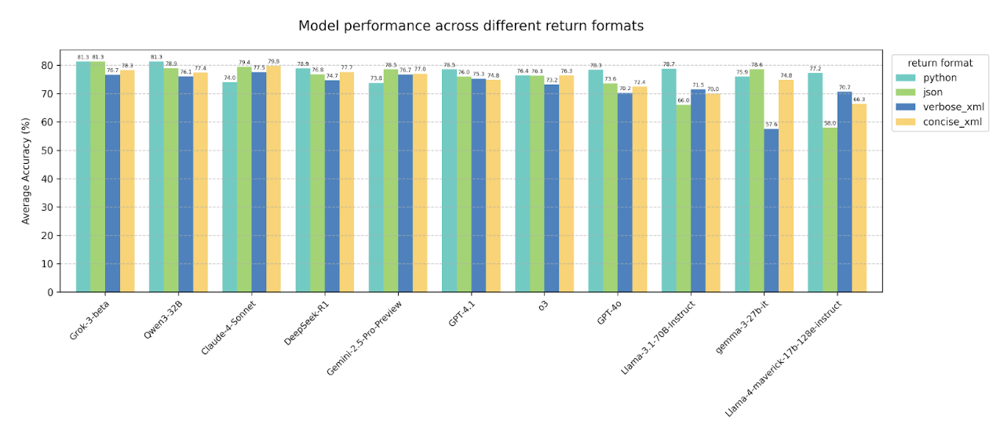
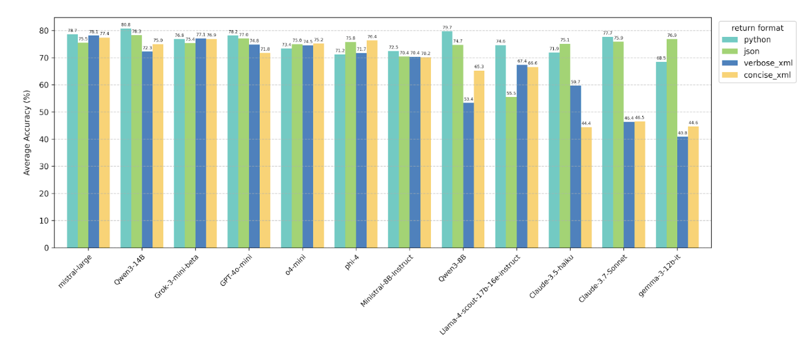
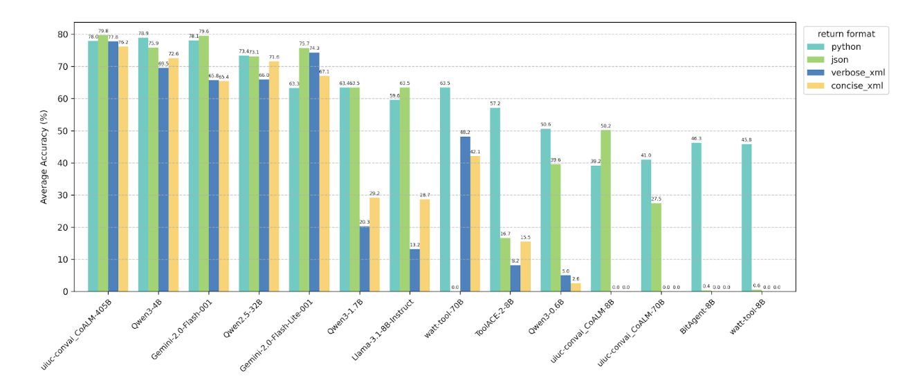
Figure 3: Comparison of model performance across different return format settings. For each return format, we averaged accuracies from all prompt variations with that format, excluding those with prompt_format="markdown" or prompt_style="experimental". Results indicate that models generally achieve higher accuracy with Python and JSON return formats than with either XML variant.
4.2 Changing function document format provided to model
When comparing different function formats provided in the system prompt, we observe a consistent trend
across nearly all tested models: performance is highest with functions in JSON format, lower with XML, and
lowest with Python.
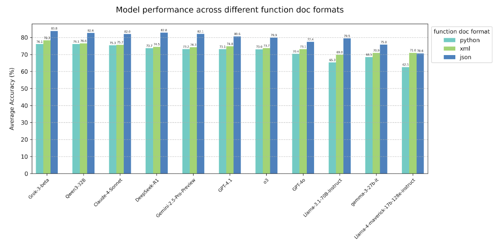
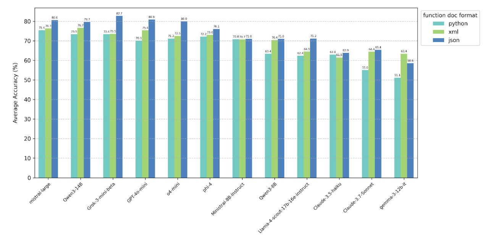
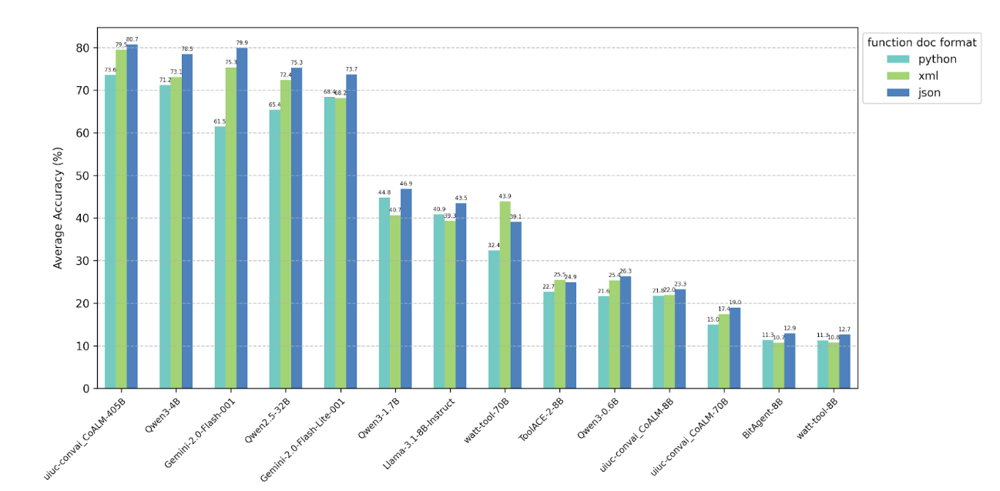
Figure 4: Comparison of model performance across function doc format configurations. For each function doc format, we
averaged accuracies from all prompt variations with that format, excluding those with
prompt_format="markdown" or prompt_style="experimental". Results indicate a general trend of JSON >
Python > XML.
4.3 Adding tool call tags
We only observe a slight performance drop when adding an extra requirement of outputting tool call tags
with function calls (<TOOLCALL></TOOLCALL>). However, some small models (e.g.
Llama-3.1-8B-Instruct, BitAgent-8B) demonstrate significant performance drops due to low capabilities to
generate correct XML style syntax, which is also shown in their lower performance when return format is in
XML (see 4.1).

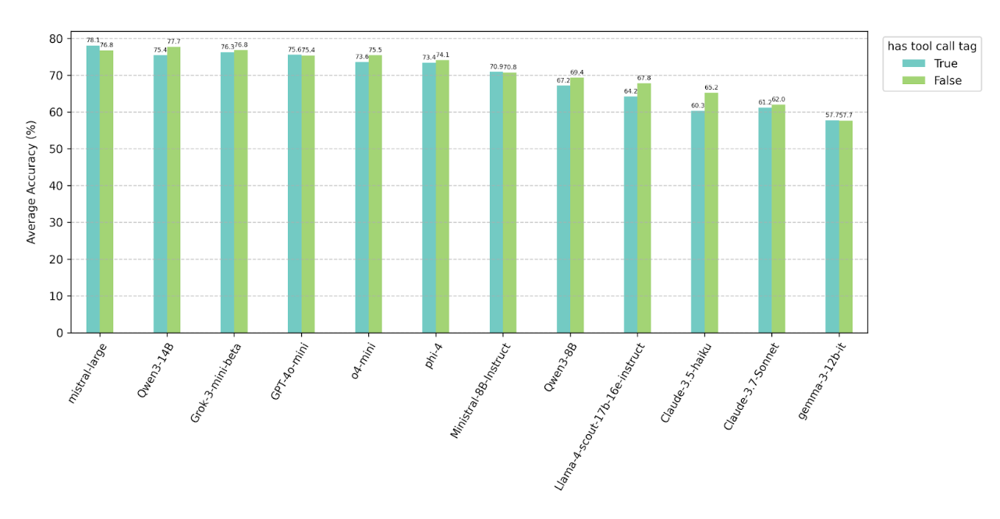
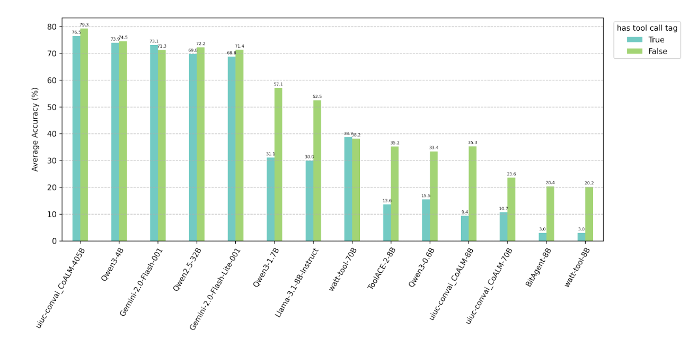
Figure 5: Comparison of model performance with and without the tool call tags. For each bar, we averaged accuracies
from all prompt variations with or without tool call tags, excluding those with prompt_format="markdown"
or prompt_style="experimental". Results indicate that models generally perform slightly better without
tool call tags.
4.4 Prompt format and prompt style
We observe no consistent performance trends when changing the prompt format from plaintext to Markdown or
when paraphrasing the system prompt. Overall, the tested models demonstrate robust behavior across these
prompt variations.
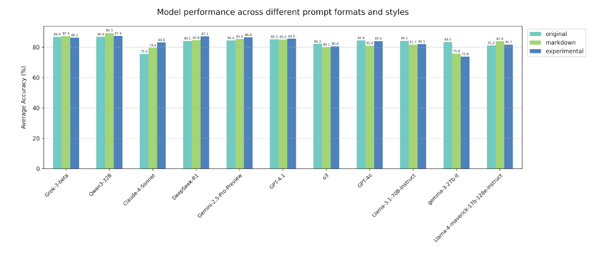
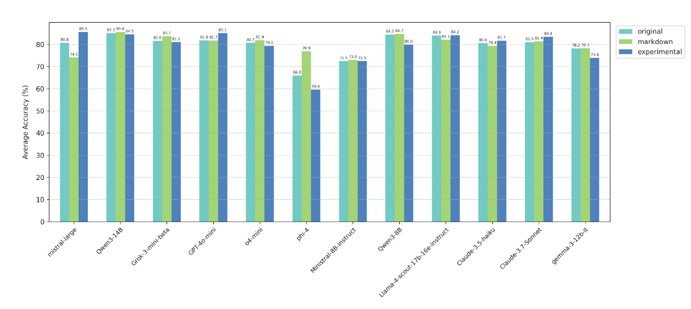
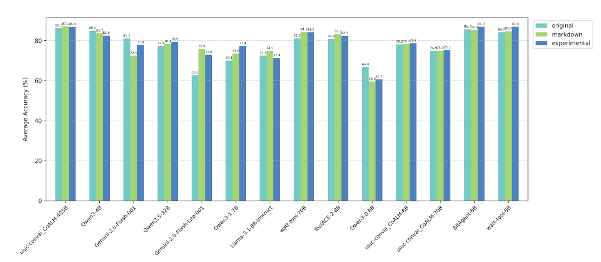
Figure 6: Comparison of model performance across prompt formats and styles. For "original", we use the original prompt
configuration in BFCL, with function_doc_format=json, return_format=Python, and no tool call tags;
"markdown" shows the performance with prompt_format="markdown", and "experimental" represents the
performance with prompt_style="experimental". Results show that tested models are generally robust to
prompt format and style variations, with no general trends observed.
4.5 Other findings
Additionally, we observed that several models that are trained specifically for tool use show significant
drops (even to 0 accuracies) when we change the return format or ask for tool call tags. For instance,
watt-tool-70B is unable to correctly output JSON format function calls, and gives Python style function
calls instead; CoALM-70B cannot correctly use tool call tags, and show near-zero performance even if we
simply add tool call tag requirements to the original BFCL system prompt. More details of specific failure
cases can be found in Section 5.2.
5. Discussion of failure modes
5.1 Common Failure Modes
•
Return format xml + function doc format python: Fail to adhere to parameter type instructions. Models are
asked to write "integer", but they give "int" instead.
Example Id and Variation: simple_19, py->verbose_xml, has tool tag
Prompt:
System:
You are an expert in composing functions. You are given a question and a set of possible functions. Based
on the question, you will need to make one or more function/tool calls to achieve the purpose. If none of
the functions can be used, point it out. If the given question lacks the parameters required by the
function, also point it out.
You should only return the function calls in the <TOOLCALL> section. If you decide to invoke any of
the function(s), you MUST put it in the format of <TOOLCALL><functions><function
name="func_name1"><params><param name="param1" value="value1" type="type1"/><param
name="param2" value="value2" type="type2"/>...</params></function><function
name="func_name2"><param name="param3" value="value3"
type="type3"/></function></functions></TOOLCALL>. The type fields of the parameters
in your function calls must be one of: string, integer, float, boolean, array, dict, or tuple. You SHOULD
NOT include any other text in the response.
At each turn, you should try your best to complete the tasks requested by the user within the current
turn. Continue to output functions to call until you have fulfilled the user's request to the best of your
ability. Once you have no more functions to call, the system will consider the current turn complete and
proceed to the next turn or task.
Here is a list of functions in python format that you can invoke.
# Function: math.gcd
"""
Compute the greatest common divisor of two numbers
Args:
num1 (int): The first number.
num2 (int): The second number.
"""
User:
Calculate the greatest common divisor of two numbers: 40 and 50
Incorrect output: (from claude-3.7-sonnet-20250219)
<TOOLCALL>
<functions>
<function name="math.gcd">
<params>
<param name="num1" value="40" type="int"/>
<param name="num2" value="50" type="int"/>
</params>
</function>
</functions>
</TOOLCALL>
Correct output example: (from DeepSeek-R1)
<TOOLCALL>
<functions>
<function name="math.gcd">
<params>
<param name="num1" value="40" type="integer"/>
<param name="num2" value="50" type="integer"/>
</params>
</function>
</functions>
</TOOLCALL>
•
Return format xml: Asked model to put
all function calls within
<functions></functions>, but model
output wraps
each function call with
<functions></functions> (also a similar case, if has tool
call tag, wraps
each function call with
<TOOLCALL></TOOLCALL>).
Example 1 Id and Variation: parallel_36, json->verbose, False
Prompt:
system:
You are an expert in composing functions.You are given a question and a set of possible functions. Based
on the question, you will need to make one or more function/tool calls to achieve the purpose. If none of
the functions can be used, point it out. If the given question lacks the parameters required by the
function, also point it out.
You should only return the function calls in your response.
If you decide to invoke any of the function(s), you MUST put it in the format of
<functions><function name="func_name1"><params><param name="param1" value="value1"
type="type1"/><param name="param2" value="value2"
type="type2"/>...</params></function><function name="func_name2"><param
name="param3" value="value3" type="type3"/></function></functions>. The type fields of the
parameters in your function calls must be one of: string, integer, float, boolean, array, dict, or tuple.
You SHOULD NOT include any other text in the response.
At each turn, you should try your best to complete the tasks requested by the user within the current
turn. Continue to output functions to call until you have fulfilled the user's request to the best of your
ability. Once you have no more functions to call, the system will consider the current turn complete and
proceed to the next turn or task.
Here is a list of functions in json format that you can invoke.
[{'name': 'paint_color_mixture', 'description': 'Gives a combination of primary colors to mix for creating
a certain color. This function requires type of paint and color. Note that the provided function is in
Python 3 syntax.', 'parameters': {'type': 'dict', 'properties': {'paint_type': {'type': 'string',
'description': 'The type of paint (Watercolor, Oil, Acrylic).'}, 'color': {'type': 'string',
'description': 'The color to be produced from the mixture.'}}, 'required': ['paint_type', 'color']}}]
user:
Using watercolor, what combination of colors should I mix to get the color magenta and what quantity for
each color? Also, I want to know how to get color navy by using acrylic paint and their respective
quantities.
Incorrect output example: (from claude-3.7-sonnect-20250219)
<functions>
<function name="paint_color_mixture">
<params>
<param name="paint_type" value="Watercolor" type="string"/>
<param name="color" value="magenta" type="string"/>
</params>
</function>
</functions>
<functions>
<function name="paint_color_mixture">
<params>
<param name="paint_type" value="Acrylic" type="string"/>
<param name="color" value="navy" type="string"/>
</params>
</function>
</functions>
Correct output example: (from mistral-large-2411)
<functions>
<function name="paint_color_mixture">
<params>
<param name="paint_type" value="Watercolor" type="string"/>
<param name="color" value="magenta" type="string"/>
</params>
</function>
<function name="paint_color_mixture">
<params>
<param name="paint_type" value="Acrylic" type="string"/>
<param name="color" value="navy" type="string"/>
</params>
</function>
</functions>
Example 2 Id and Variation: parallel_23, xml->py, True
Prompt:
System:
You are an expert in composing functions.You are given a question and a set of possible functions. Based
on the question, you will need to make one or more function/tool calls to achieve the purpose. If none of
the functions can be used, point it out. If the given question lacks the parameters required by the
function, also point it out.
You should only return the function calls in the <TOOLCALL> section. If you decide to invoke any of
the function(s), you MUST put it in the format of <TOOLCALL>[func_name1(params_name1=params_value1,
params_name2=params_value2...), func_name2(params)]</TOOLCALL>. You SHOULD NOT include any other
text in the response.
At each turn, you should try your best to complete the tasks requested by the user within the current
turn. Continue to output functions to call until you have fulfilled the user's request to the best of your
ability. Once you have no more functions to call, the system will consider the current turn complete and
proceed to the next turn or task.
Here is a list of functions in xml format that you can invoke.
<function name="alimony_calculator.ca.calculate">
<desc>Calculate the amount of alimony one spouse would have to pay to the other spouse in the state of
California.</desc>
<params>
<param name="payor_income" type="integer" required="true">
<desc>The monthly gross income of the payor spouse.</desc>
</param>
<param name="recipient_income" type="integer" required="true">
<desc>The monthly gross income of the recipient spouse.</desc>
</param>
<param name="duration" type="integer" required="true">
<desc>The duration of the alimony in years.</desc>
</param>
</params>
</function>
User:
Please calculate the amount of alimony the payor spouse would have to pay to the recipient spouse in
California for the next 10 years and 20 years if the payor spouse's monthly gross income is $10,000 and
the recipient spouse's monthly gross income is $3,000.
Incorrect output example: (from gemini-2.0-flash-lite-001)
<TOOLCALL>
alimony_calculator.ca.calculate(payor_income=10000, recipient_income=3000,
duration=10)
</TOOLCALL>
<TOOLCALL>
alimony_calculator.ca.calculate(payor_income=10000, recipient_income=3000,
duration=20)
</TOOLCALL>
Correct output example: (from gemini-2.5-pro-preview-05-06)
<TOOLCALL>
[alimony_calculator.ca.calculate(payor_income=10000, recipient_income=3000, duration=10),
alimony_calculator.ca.calculate(payor_income=10000, recipient_income=3000, duration=20)]
</TOOLCALL>
•
Incorrect use of quotation marks — Return format json
Example Id and Variation: live_simple_181-106-0, xml->json, True
Prompt:
System:
You are an expert in composing functions.You are given a question and a set of possible functions. Based
on the question, you will need to make one or more function/tool calls to achieve the purpose. If none of
the functions can be used, point it out. If the given question lacks the parameters required by the
function, also point it out.
You should only return the function calls in the <TOOLCALL> section. If you decide to invoke any of
the function(s), you MUST put it in the format of <TOOLCALL><functions><function
name="func_name1"><params><param name="param1" value="value1" type="type1"/><param
name="param2" value="value2" type="type2"/>...</params></function><function
name="func_name2"><param name="param3" value="value3"
type="type3"/></function></functions></TOOLCALL>. The type fields of the parameters
in your function calls must be one of: string, integer, float, boolean, array, dict, or tuple. You SHOULD
NOT include any other text in the response.
At each turn, you should try your best to complete the tasks requested by the user within the current
turn. Continue to output functions to call until you have fulfilled the user's request to the best of your
ability. Once you have no more functions to call, the system will consider the current turn complete and
proceed to the next turn or task.
Here is a list of functions in xml format that you can invoke.
<function name="get_service_id">
<desc>Retrieve the unique identifier for a specific service within a given province based on the service
type and location.</desc>
<params>
<param name="service_id" type="integer" required="true">
<desc>The unique identifier of the service. For example, '1' represents a cleaning service, '2' for an
ironing service, and '3' for a comprehensive cleaning service.</desc>
</param>
<param name="province_id" type="integer" required="false">
<desc>The unique identifier of the province. For instance, '1' for Bangkok, '2' for Chiang Mai, and '3'
for Chonburi.</desc>
</param>
<param name="district_name" type="string" required="false">
<desc>The name of the district where the service is located, such as 'Watthana' or 'Thon Buri'.</desc>
</param>
<param name="rating" type="float" required="false">
<desc>The average rating of the service provider's review score, from 0.0 to 5.0, where '4.5' represents
a very good rating.</desc>
</param>
</params>
</function>
User:
Help find a housekeeper who provides ironing services in Bangkok, Chatuchak District, with a review score of 4.5 stars or more.
Incorrect output example: (from Llama-3.1-70B-Instruct)
<TOOLCALL>
[{\"function\":\"get_service_id\",\"parameters\":{\"service_id:"\2\",\"province_id:"\1\",\"district_name:Chatuchak\",\"rating:"\4.5\"}}]\n
</TOOLCALL>
Correct output example: (from Qwen3-32B)
<TOOLCALL>
```json\n[{\"function\":\"get_service_id\",\"parameters\":{\"service_id\":2,\"province_id\":1,\"district_name\":\"Chatuchak\",\"rating\":4.5}}]\n```
</TOOLCALL>
•
Incorrect use of quotation marks — Return format xml: should use ' or " instead of \\\” for escaping
Example Id and Variation: simple_94, xml->verbose, True
Prompt:
System:
You are an expert in composing functions.You are given a question and a set of possible functions. Based
on the question, you will need to make one or more function/tool calls to achieve the purpose. If none of
the functions can be used, point it out. If the given question lacks the parameters required by the
function, also point it out.
You should only return the function calls in the <TOOLCALL> section. If you decide to invoke any of
the function(s), you MUST put it in the format of <TOOLCALL><functions><function
name="func_name1"><params><param name="param1" value="value1" type="type1"/><param
name="param2" value="value2" type="type2"/>...</params></function><function
name="func_name2"><param name="param3" value="value3"
type="type3"/></function></functions></TOOLCALL>. The type fields of the parameters
in your function calls must be one of:
string, integer, float, boolean, array, dict, or tuple. You SHOULD NOT include any other text in the
response.
At each turn, you should try your best to complete the tasks requested by the user within the current
turn. Continue to output functions to call until you have fulfilled the user's request to the best of your
ability. Once you have no more functions to call, the system will consider the current turn complete and
proceed to the next turn or task.
Here is a list of functions in xml format that you can invoke.
<function name="update_user_info">
<desc>Update user information in the database.</desc>
<params>
<param name="user_id" type="integer" required="true">
<desc>The user ID of the customer.</desc>
</param>
<param name="update_info" type="dict" required="true">
<desc>The new information to update.</desc>
</param>
<param name="database" type="string" required="false">
<desc>The database where the user's information is stored.</desc>
</param>
</params>
</function>
User:
Update my customer information with user id 43523 'name':'John Doe', 'email':'johndoe@email.com' in the
database.
Incorrect output example: (from gemma-3-27b-it)
<TOOLCALL>
<functions>
<function name=\"update_user_info\">
<params>
<param name=\"user_id\" value=\"43523\" type=\"integer\"/>
<param name=\"update_info\" value=\"{\\\\\\"name\\\\\\": \\\\\\"John Doe\\\\\\", \\\\\\"email\\\\\\":
\\\\\\"johndoe@email.com\\\\\\"}\" type=\"dict\"/>
</params>
</function>
</functions>
</TOOLCALL>
Correct output example: (from gpt-4o-2024-11-20)
<TOOLCALL>
<functions>
<function name=\"update_user_info\">
<params>
<param name=\"user_id\" value=\"43523\" type=\"integer\"/>
<param name=\"update_info\" value=\"{'name':'John Doe', 'email':'johndoe@email.com'}\" type=\"dict\"/>
</params>
</function>
</functions>
</TOOLCALL>
•
Incorrect use of quotation marks — Xml tag asked but not used
Example Id and Variation: parallel_multiple_154, py->concise, False
Prompt:
System:
You are an expert in composing functions.You are given a question and a set of possible functions. Based
on the question, you will need to make one or more function/tool calls to achieve the purpose. If none of
the functions can be used, point it out. If the given question lacks the parameters required by the
function, also point it out.
You should only return the function calls in the <TOOLCALL> section. If you decide to invoke any of
the function(s), you MUST put it in the format of <TOOLCALL>```json
[{"function":"func_name1","parameters":{"param1":"value1","param2":"value2"...}},{"function":"func_name2","parameters":{"param":"value"}}]
```</TOOLCALL>. You SHOULD NOT include any other text in the response.
At each turn, you should try your best to complete the tasks requested by the user within the current
turn. Continue to output functions to call until you have fulfilled the user's request to the best of your
ability. Once you have no more functions to call, the system will consider the current turn complete and
proceed to the next turn or task.
Here is a list of functions in xml format that you can invoke.
# Function: lawsuit_search
"""
Retrieve all lawsuits involving a particular entity from specified jurisdiction.
Args:
entity (str): The entity involved in lawsuits.
county (str): The jurisdiction for the lawsuit search.
state (str): The state for the lawsuit search. Default is California.
"""
# Function: calculate_probability
"""
Calculate the probability of an event.
Args:
total_outcomes (int): Total number of possible outcomes.
favorable_outcomes (int): Number of outcomes considered as 'successful'.
round_to (int, default=2): Number of decimal places to round the result to.
"""
# Function: predict_house_price
"""
Predict house price based on area, number of rooms and year of construction.
Args:
area (int): Area of the house in square feet.
rooms (int): Number of rooms in the house.
year (int): Year when the house was constructed.
location (str): The location or city of the house.
"""
User:
Imagine you are considering to buy a house in San Francisco, California. The house was built in 1985, has
an area of 2000 square feet and contains 4 rooms. You want to predict the price of this house. After
buying the house, you also want to know about any lawsuits involving the previous owner, Mr. John Doe, in
the county of San Francisco. Additionally, you are curious about the probability of winning a lottery
where the total number of possible outcomes is 1000 and the number of favorable outcomes is 5. You want
the result to be rounded to 3 decimal places. Can you provide the predicted house price, the lawsuits
involving Mr. John Doe in San Francisco county, and the probability of winning the lottery?
Incorrect output example: (from watt-tool-70B)
<predict_house_price>
<area>2000</area>
<rooms>4</rooms>
<year>1985</year>
<location>San Francisco</location>
</predict_house_price>
<lawsuit_search>
<entity>Mr. John Doe</entity>
<county>San Francisco</county>
<state>California</state>
</lawsuit_search>
Correct output example: (from Llama-3.1-70B-Instruct)
<functions>
<function name=\"predict_house_price\">
<param name=\"area\" type=\"integer\">2000</param>
<param name=\"rooms\" type=\"integer\">4</param>
<param name=\"year\" type=\"integer\">1985</param>
<param name=\"location\" type=\"string\">San Francisco</param>
</function>
<function name=\"lawsuit_search\">
<param name=\"entity\" type=\"string\">Mr. John Doe</param>
<param name=\"county\" type=\"string\">San Francisco</param>
<param name=\"state\" type=\"string\">California</param>
</function>
<function name=\"calculate_probability\">
<param name=\"total_outcomes\" type=\"integer\">1000</param>
<param name=\"favorable_outcomes\" type=\"integer\">5</param>
<param name=\"round_to\" type=\"integer\">3</param>
</function>
</functions>
•
Incorrect use of quotation marks — Xml tag / tool call tag / bracket not properly closed
Example Id and Variation: simple_94, xml->verbose, True
Prompt:
System:
You are an expert in composing functions.You are given a question and a set of possible functions. Based
on the question, you will need to make one or more function/tool calls to achieve the purpose. If none of
the functions can be used, point it out. If the given question lacks the parameters required by the
function, also point it out.
You should only return the function calls in the <TOOLCALL> section. If you decide to invoke any of
the function(s), you MUST put it in the format of <TOOLCALL><functions><function
name="func_name1"><params><param name="param1" value="value1" type="type1"/><param
name="param2" value="value2" type="type2"/>...</params></function><function
name="func_name2"><param name="param3" value="value3"
type="type3"/></function></functions></TOOLCALL>. The type fields of the parameters
in your function calls must be one of:
string, integer, float, boolean, array, dict, or tuple. You SHOULD NOT include any other text in the
response.
At each turn, you should try your best to complete the tasks requested by the user within the current
turn. Continue to output functions to call until you have fulfilled the user's request to the best of your
ability. Once you have no more functions to call, the system will consider the current turn complete and
proceed to the next turn or task.
Here is a list of functions in xml format that you can invoke.
<function name="update_user_info">
<desc>Update user information in the database.</desc>
<params>
<param name="user_id" type="integer" required="true">
<desc>The user ID of the customer.</desc>
</param>
<param name="update_info" type="dict" required="true">
<desc>The new information to update.</desc>
</param>
<param name="database" type="string" required="false">
<desc>The database where the user's information is stored.</desc>
</param>
</params>
</function>
User:
Update my customer information with user id 43523 'name':'John Doe', 'email':'johndoe@email.com' in the
database.
Incorrect output example: (from gemma-3-27b-it)
<TOOLCALL>
<functions>
<function name="update_user_info">
<params>
<param name="user_id" value="43523" type="integer"/>
<param name="update_info" value="{'name': 'John Doe', 'email': 'johndoe@email.com'}" type="dict"/>
<param name="database" value="the database" type="string"/>
</function>
</functions>
</TOOLCALL>
Correct output example: (from gpt-4o-2024-11-20)
<TOOLCALL>
<functions>
<function name="update_user_info">
<params>
<param name="user_id" value="43523" type="integer"/>
<param name="update_info" value="{'name':'John Doe', 'email':'johndoe@email.com'}" type="dict"/>
<param name="database" value="" type="string"/>
</params>
</function>
</functions>
</TOOLCALL>
•
Unable to output specific format of function calls
Example Id and Variation: simple_168, xml->json, True
Prompt:
System:
You are an expert in composing functions.You are given a question and a set of possible functions. Based
on the question, you will need to make one or more function/tool calls to achieve the purpose. If none of
the functions can be used, point it out. If the given question lacks the parameters required by the
function, also point it out.
You should only return the function calls in the <TOOLCALL> section. If you decide to invoke any of the function(s), you MUST put it in the format of <TOOLCALL>```json [{"function":"func_name1","parameters":{"param1":"value1","param2":"value2"...}},{"function":"func_name2","parameters":{"param":"value"}}]```</TOOLCALL>. You SHOULD NOT include any other text in the response.
At each turn, you should try your best to complete the tasks requested by the user within the current turn. Continue to output functions to call until you have fulfilled the user's request to the best of your ability. Once you have no more functions to call, the system will consider the current turn complete and proceed to the next turn or task.
Here is a list of functions in xml format that you can invoke.
<function name="lawsuit_search">
<desc>Search for lawsuits related to a specific company within a specific date range and location.</desc>
<params>
<param name="company" type="string" required="true">
<desc>The company related to the lawsuit.</desc>
</param>
<param name="start_date" type="string" required="true">
<desc>Start of the date range for when the lawsuit was filed in the format of MM-DD-YYY.</desc>
</param>
<param name="location" type="string" required="true">
<desc>Location where the lawsuit was filed in the format of full state name.</desc>
</param>
<param name="status" type="string" required="false">
<desc>The status of the lawsuit. Default is 'ongoing'.</desc>
</param>
</params>
</function>
User:
Search for ongoing lawsuits related to the company 'Google' filed after January 1, 2021 in California.
Incorrect output example: (from watt-tool-70B)
<TOOLCALL>
[lawsuit_search(company=\"Google\", start_date=\"01-01-2021\", location=\"California\")]
</TOOLCALL>
Correct output example: (from claude-3.5-haiku-20241022)
<TOOLCALL>
```json
[{"function":"lawsuit_search","parameters":{"company":"Google","start_date":"01-01-2021",
"location":"California","status":"ongoing"}}]
```
</TOOLCALL>
If you would like to cite BFCL:
@inproceedings{patil2025bfcl,
title={The Berkeley Function Calling Leaderboard (BFCL): From Tool Use to Agentic Evaluation of Large Language Models},
author={Patil, Shishir G. and Mao, Huanzhi and Cheng-Jie Ji, Charlie and Yan, Fanjia and Suresh, Vishnu and Stoica, Ion and E. Gonzalez, Joseph},
booktitle={Forty-second International Conference on Machine Learning},
year={2025},
}